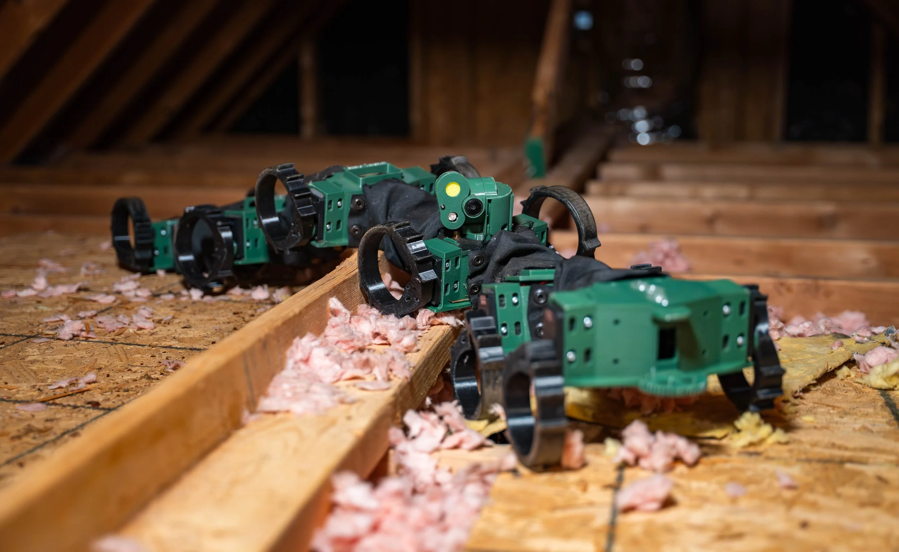

Current Role
Ground Control Robotics
Robotics Engineering Intern
May 2026 – Aug 2026 · Atlanta, GA
Building a snake-like inspection robot with RGB/thermal cameras for crawlspaces and industrial sites.
- Migrating comms/controls to ROS2 to enable robot collaboration, sensor integration, and larger data streams.
- Developing an Android-based controller for viewing on-board camera streams and adjusting gait parameters.
- Developing building-mapping strategies from on-board cameras and LiDAR using Gaussian Splatting techniques.
- Implementing RL policies in IsaacSim for autonomous exploration and traversal of unknown areas.
